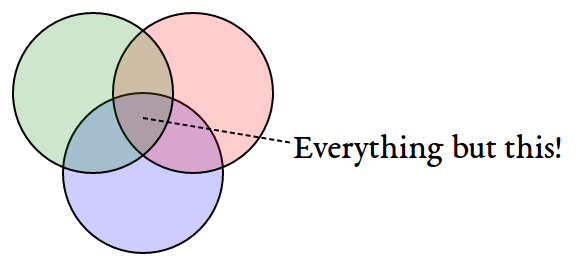

Data Analysis with Python Assignment 3
This assignment requires more individual learning then the last one did - you are encouraged to check out the pandas documentation to find functions or methods you might not have used yet, or ask questions on Stack Overflow and tag them as pandas and python related. And of course, the discussion forums are open for interaction with your peers and the course staff.
Imports
# python standard library
import re
from abc import ABCMeta
from abc import abstractproperty
from collections import namedtuple
# third party
import pandas
from tabulate import tabulate
Some Constants
COLUMN_AXIS = 1
A Base Data-Loader class
class BaseData(object):
"""base class for the data-loaders
Parameters
----------
constants: object
object with the constant values expected by the data-builder
"""
__metaclass__ = ABCMeta
def __init__(self, constants):
self.constants = constants
self._data = None
self._frame = None
return
def rename_countries(self, country):
"""renames country
.. note:: Expects the constants to have a dict named `country_remap`
Parameters
----------
country (str):
name of the country
Returns
-------
str: country to use in the column
"""
return self.constants.country_remap.get(country, country)
@abstractproperty
def frame(self):
"""data-frame with no cleaning up
Returns
-------
DataFrame: source for the data
"""
return
@abstractproperty
def data(self):
"""the data-frame"""
return
Question 1 (20%)
Energy Indicatiors
Load the energy data from the file `Energy Indicators.xls`, which is a list of indicators of energy supply and renewable electricity production from the United Nations for the year 2013, and should be put into a DataFrame with the variable name of energy.
Keep in mind that this is an Excel file, and not a comma separated values file.
-
[X]make sure to exclude the footer and header information from the datafile. -
[X]the first two columns are unneccessary, so you should get rid of them -
[X]and you should change the column labels so that the columns are:['Country', 'Energy Supply', 'Energy Supply per Capita', '% Renewable'] -
[X]Convert `Energy Supply` to gigajoules (there are 1,000,000 gigajoules in a petajoule). -
[X]For all countries which have missing data (e.g. data with "…") make sure this is reflected as `np.NaN` values.
Rename the following list of countries (for use in later questions):
| Original | Updated |
|---|---|
| "Republic of Korea" | "South Korea" |
| "United States of America" | "United States" |
| "United Kingdom of Great Britain and Northern Ireland19" | "United Kingdom" |
| "China, Hong Kong Special Administrative Region3" | "Hong Kong" |
There are also several countries with numbers and/or parenthesis in their name. Be sure to remove these,
e.g.
Bolivia (Plurinational State of) should be Bolivia,
Switzerland17 should be Switzerland.
class EnergyIndicatorsConstants:
source = "energy_indicators.xls"
columns = ['Country', 'Energy Supply', 'Energy Supply per Capita',
'% Renewable']
header_rows = 17
footer_rows = 38
remove_columns_count = 2
missing_values = "..."
country_remap = {"Republic of Korea": "South Korea",
"United States of America20": "United States",
"United Kingdom of Great Britain and Northern Ireland19": "United Kingdom",
"China, Hong Kong Special Administrative Region3": "Hong Kong",
"China, Macao Special Administrative Region4": "Macao"}
# this will wipe out Hong Kong so use the regex after the remap
country_key = "country"
country_regex = re.compile(
"(?P<{0}>[a-zA-Z\s\-]+)\b?(\(|\d)*".format(country_key))
class EnergyIndicatorsKeys(object):
"""Keys for the data-frame"""
country_name = "Country"
per_capita = "Energy Supply per Capita"
percent_renewable = "% Renewable"
population = "population"
total_supply = "Energy Supply"
class UnitConverter(object):
petajoule_to_gigajoule = 10**6
class EnergyIndicators(BaseData):
"""builds the energy indicator data-frame
Parameters
----------
constants (objects): object with the string constants
"""
def __init__(self, *args, **kwargs):
super(EnergyIndicators, self).__init__(*args, **kwargs)
self._to_remove = None
return
@property
def to_remove(self):
"""leading columns to remove
Returns
-------
list: names to use for columns to remove from the beginning of sheet
"""
if self._to_remove is None:
self._to_remove = [
"Bad_{0}".format(index)
for index in range(self.constants.remove_columns_count)]
return self._to_remove
def clean_countries(self, country):
"""Gets rid of the extra characters put in by the excel spreadsheet
Parameters
----------
country: string
country name to clean up
Returns
-------
str: country name with extra characters removed
"""
return self.constants.country_regex.search(country).group(
self.constants.country_key)
@property
def frame(self):
"""
Returns
-------
DataFrame: the original data-frame before cleaning
"""
if self._frame is None:
self._frame = pandas.read_excel(self.constants.source,
names=self.to_remove + self.constants.columns,
skiprows=self.constants.header_rows,
skip_footer=self.constants.footer_rows,
na_values=self.constants.missing_values)
return self._frame
@property
def data(self):
"""DataFrame with energy indicators"""
if self._data is None:
expected_rows = len(self.frame)
# get rid of the first two columns
self._data = self.frame.drop(self.to_remove, axis=COLUMN_AXIS)
assert len(self._data) == expected_rows
self._data["Energy Supply"] *= UnitConverter.petajoule_to_gigajoule
assert len(self._data) == expected_rows
self._data.Country = self._data.Country.map(self.rename_countries)
assert len(self._data) == expected_rows
self._data.Country = self._data.Country.map(self.clean_countries)
assert len(self._data) == expected_rows
# Iran is ending up with trailing spaces
self._data.Country = self._data.Country.str.strip()
assert len(self._data) == expected_rows
return self._data
Checking for missing values
data = EnergyIndicators(EnergyIndicatorsConstants).data
missing = data[data[EnergyIndicatorsKeys.total_supply].isnull()]
for country in missing.Country:
print(country)
assert len(data[data.Country=="Guinea"]) == 1
American Samoa Guam Northern Mariana Islands Tuvalu United States Virgin Islands
GDP Data
Next, load the GDP data from the file `worldbank.csv`, which is a csv containing countries' GDP from 1960 to 2015 from the World Bank. Call this DataFrame GDP.
- Use only the last 10 years (2006-2015) of GDP data
- Make sure to skip the header, and rename the following list of countries:
Original Updated "Korea, Rep." "South Korea" "Iran, Islamic Rep." "Iran" "Hong Kong SAR, China" "Hong Kong"
head -n 6 world_bank.csv
Data Source,World Development Indicators,,,,,,,,,,,,,,,,,,,,,,,,,,,,,,,,,,,,,,,,,,,,,,,,,,,,,,,,,, ,,,,,,,,,,,,,,,,,,,,,,,,,,,,,,,,,,,,,,,,,,,,,,,,,,,,,,,,,,, Last Updated Date,2016-07-22,,,,,,,,,,,,,,,,,,,,,,,,,,,,,,,,,,,,,,,,,,,,,,,,,,,,,,,,,, ,,,,,,,,,,,,,,,,,,,,,,,,,,,,,,,,,,,,,,,,,,,,,,,,,,,,,,,,,,, Country Name,Country Code,Indicator Name,Indicator Code,1960,1961,1962,1963,1964,1965,1966,1967,1968,1969,1970,1971,1972,1973,1974,1975,1976,1977,1978,1979,1980,1981,1982,1983,1984,1985,1986,1987,1988,1989,1990,1991,1992,1993,1994,1995,1996,1997,1998,1999,2000,2001,2002,2003,2004,2005,2006,2007,2008,2009,2010,2011,2012,2013,2014,2015 Aruba,ABW,GDP at market prices (constant 2010 US$),NY.GDP.MKTP.KD,,,,,,,,,,,,,,,,,,,,,,,,,,,,,,,,,,,,,,,,,,,,,,,,,,,2467703910.61453,,,,,
Looking at the output - the first four rows make up the header.
/home/brunhilde/.virtualenvs/necromuralist.github.io/bin/python: No module named virtualfishtail -n 1 world_bank.csv
Zimbabwe,ZWE,GDP at market prices (constant 2010 US$),NY.GDP.MKTP.KD,3338344012.90185,3549199070.9497,3600111298.35332,3824914650.44578,3782604520.95833,3968351985.97577,4028795146.6275,4365884796.32639,4451898619.43207,5005191078.9716,6134619995.73105,6681680049.01358,7238248945.11036,7426784679.20989,7918820573.06103,7765890469.91514,7801989350.18084,7266718017.68287,7070013593.75696,7303114444.68453,8356273493.89233,9402932251.4409,9650633427.20048,9803625445.78776,9616635004.94927,10284451429.706,10500325060.9688,10621156208.043,11423305701.9592,12017290918.61,12857125655.5919,13568353827.6226,12345089414.7936,12474892907.901,13626974060.7811,13648508189.0731,15062588732.5267,15466355608.5096,15912592743.6978,15782456234.7071,15299640970.9204,15519896908.6761,14139553643.2837,11736525963.7447,11054922722.9036,10423566818.52,10062755569.0217,9695130198.50778,7982102821.16384,8459783044.33081,9422161300,10543908035.0329,11657893456.879,12180644491.5009,12649391052.8218,12785173627.385
The last row is a country, so nothing needs to be popped off.
/home/brunhilde/.virtualenvs/necromuralist.github.io/bin/python: No module named virtualfishgrep -P "(Korea|Iran|Hong)" world_bank.csv
"Hong Kong SAR, China",HKG,GDP at market prices (constant 2010 US$),NY.GDP.MKTP.KD,,,,,,17646914072.5316,17963587597.2928,18251600758.537,18871674770.8568,21012392496.6626,22946967034.0575,24620544326.6381,27233218366.4241,30577436438.9298,31315910641.5164,31470018825.6732,36556880968.4152,40843484682.3004,44217537723.3852,49327657046.3582,54313855535.2722,59343749332.4989,61094263256.6516,64745875473.9274,71203501724.2224,71742527987.2525,79674401051.0777,90349564237.6023,98039821040.139,100272275421.3,104113116514.092,110049570498.302,116911143429.477,124160923333.7,131655256011.867,134780527700.784,140520117876.574,147686148439.864,138998299558.026,142482530553.942,153401659211.88,154261939959.413,156817528193.178,161610386688.859,175670644204.052,188649442838.506,201916372094.71,214969758150.611,219544022644.222,214145185396.967,228637697575.04,239645861296.69,243720566257.359,251208086226.166,257775655510.28,263860579574.348 "Iran, Islamic Rep.",IRN,GDP at market prices (constant 2010 US$),NY.GDP.MKTP.KD,55008199861.362,60724056997.4978,65526885363.1927,70141337925.7686,76085976411.7395,89047763860.6423,99290400337.9273,110463353581.338,126374696820.65,145983827472.444,161936358582.348,184124203150.852,210820400546.88,226508983528.938,239648884838.343,238867111255.166,282485286342.747,274650337458.608,239382881270.266,210607239021.737,165116813883.768,155710460310.332,191790513393.427,213053784552.521,197842062853.222,201537060006.584,181816848980.232,181503928205.772,170464865427.365,180917968164.33,205513632859.481,231647051483.288,239286729358.449,235766794094.242,231762799356.709,237327527424.692,252399073803.436,255807469064.417,261128294555.753,266357901072.916,281927925364.048,288672128262.342,311993456682.879,338947502385.457,353646523406.399,368530410531.603,389552313541.27,425064554419.087,428990857822.095,438920754763.986,467790215915.476,485330901134.448,453256899727.832,444592553889.771,463902735245.89, "Korea, Rep.",KOR,GDP at market prices (constant 2010 US$),NY.GDP.MKTP.KD,27576960757.4306,28938253834.6781,29649660482.4228,32475783404.6661,34931355042.4565,36744341227.4807,41410872518.0114,43936951529.238,49077491649.4138,55997453545.498,63203503772.4219,69802723539.3236,74347466779.7191,85341610691.2348,93348282252.2833,100197661848.862,113679909958.45,127114323218.173,140204031456.712,151966733489.486,149093441974.141,160132393213.379,173409461822.278,194534213829.381,213713480107.14,229679939886.331,257792299501.017,289413124776.731,323159876101.536,344979833693.394,377053749283.025,413676560143.42,437525995578.944,465218740624.555,506027230599.139,551218621130.396,590828731339.993,624900292540.467,589194128884.459,652418133306.823,710034993718.359,742166345728.082,797327366677.531,820714629232.707,860928427357.697,894708567926.711,941019882149.125,992431619676.197,1020509638539.71,1027729932849.17,1094499338702.72,1134795571930.64,1160809426196.79,1194429021591.57,1234340240503.49,1266580410309.11 "Korea, Dem. People’s Rep.",PRK,GDP at market prices (constant 2010 US$),NY.GDP.MKTP.KD,,,,,,,,,,,,,,,,,,,,,,,,,,,,,,,,,,,,,,,,,,,,,,,,,,,,,,,,/home/brunhilde/.virtualenvs/necromuralist.github.io/bin/python: No module named virtualfish
class GDPConstants(object):
"""holds values for the GDP data"""
source = "world_bank.csv"
header_rows = 4
# the columns are based on Question one, not the data description
columns = (["Country Name"] +
[str(year) for year in range(2006, 2016)])
country_remap = {"Hong Kong SAR, China": "Hong Kong",
"Iran, Islamic Rep.": "Iran",
"Korea, Rep.": "South Korea"}
class GDPKeys(object):
"""column names for the GDP data"""
country_name = "Country Name"
last_ten_years = [str(year) for year in range(2006, 2016)]
first_year = last_ten_years[0]
last_year = last_ten_years[-1]
class GDPData(BaseData):
"""loads and cleans the gdp data
Parameters
----------
constants : object
object with the string constants
"""
def __init__(self, *args, **kwargs):
super(GDPData, self).__init__(*args, **kwargs)
return
@property
def frame(self):
"""
Returns
-------
DataFrame: Source for the data
"""
if self._frame is None:
self._frame = pandas.read_csv(self.constants.source,
skiprows=self.constants.header_rows,
usecols=self.constants.columns)
return self._frame
@property
def data(self):
"""the GDP data
Returns
-------
DataFrame: cleaned GPD data
"""
if self._data is None:
self._data = self.frame
self._data[GDPKeys.country_name] = self.data[GDPKeys.country_name].map(
self.rename_countries)
return self._data
data = GDPData(GDPConstants).data
missing = data[data["2015"].isnull()]
print("{0} Countries Missing 2015 data".format(len(missing)))
50 Countries Missing 2015 data
Sciamgo Journal Data
Finally, load the Sciamgo Journal and Country Rank data for Energy Engineering and Power Technology from the file `scimagojr-3.xlsx`, which ranks countries based on their journal contributions in the aforementioned area. Call this DataFrame ScimEn.
- and only the top 15 countries by Scimago 'Rank' (Rank 1 through 15).
class SciamgoConstants(object):
"""strings and such to load and clean the Sciamgo data"""
source = "scimagojr-3.xlsx"
class SciamgoKeys(object):
"""Keys for the data-frame"""
country_name = 'Country'
self_citations = "Self-citations"
total_citations = "Citations"
self_to_total_citations = "self_to_total_citations"
citable_documents = "Citable documents"
citable_documents_per_capita = "citable_documents_per_capti"
class SciamgoData(BaseData):
"""loads the Sciamgo Journal Country Rank data"""
def __init__(self, *args, **kwargs):
super(SciamgoData, self).__init__(*args, **kwargs)
self._top_15 = None
return
@property
def data(self):
"""the Sciamgo data
Returns
-------
DataFrame: the country rank data
"""
if self._data is None:
self._data = pandas.read_excel(self.constants.source)
return self._data
frame = data
@property
def top_15(self):
"""Returns the top 15 entries by rank
This is needed because question two wants you to compare how much you
have after you merge without the slice
Returns
-------
DataFrame: slice of top 15 countries by rank
"""
if self._top_15 is None:
self._top_15 = self.data[self.data.Rank < 16]
return self._top_15
builder = SciamgoData(SciamgoConstants)
data = builder.data
top_data = builder.top_15
missing = data[data.Documents.isnull()]
print("{0} countries with missing documents".format(len(missing)))
0 countries with missing documents
Since the Sciamgo data has all the countries, we can use it to double check that we cleaned up all the names correctly.
/home/brunhilde/.virtualenvs/necromuralist.github.io/bin/python: No module named virtualfishenergy = EnergyIndicators(EnergyIndicatorsConstants).data
gdp_data = GDPData(GDPConstants).data
print("| Energy Indicators | GDP |")
print("|-+-|")
for country in top_data.Country:
print("|{0}|{1}|".format(energy[
energy[EnergyIndicatorsKeys.country_name].str.startswith(country)]
[EnergyIndicatorsKeys.country_name].iloc[0],
gdp_data[
gdp_data[GDPKeys.country_name].str.startswith(country)]
[GDPKeys.country_name].iloc[0]))
| Energy Indicators | GDP |
|---|---|
| China | China |
| United States | United States |
| Japan | Japan |
| United Kingdom | United Kingdom |
| Russian Federation | Russian Federation |
| Canada | Canada |
| Germany | Germany |
| India | India |
| France | France |
| South Korea | South Korea |
| Italy | Italy |
| Spain | Spain |
| Iran | Iran |
| Australia | Australia |
| Brazil | Brazil |
The DataFrames
Since Question 2 assumes you have access to the data-frames before reducing them to 15, make building them a separate function.
/home/brunhilde/.virtualenvs/necromuralist.github.io/bin/python: No module named virtualfishDataFrames = namedtuple("DataFrames", "energy gdp sciamgo".split())
def build_data_frames():
"""builds the three data-frames
Returns
-------
DataFrames: named tuple with the three data-frame builders
* energy: EnergyIndicators
* gdp: GDPData
* sciamgo: SciamgoData
"""
energy_indicators = EnergyIndicators(EnergyIndicatorsConstants)
gdp = GDPData(GDPConstants)
sciamgo = SciamgoData(SciamgoConstants)
return DataFrames(energy=energy_indicators, gdp=gdp, sciamgo=sciamgo)
The Combined DataFrame
Join the three datasets: GDP, Energy, and ScimEn into a new dataset (using the intersection of country names).
The index of this DataFrame should be the name of the country, and the columns should be ['Rank', 'Documents', 'Citable documents', 'Citations', 'Self-citations', 'Citations per document', 'H index', 'Energy Supply', 'Energy Supply per Capita', '% Renewable', '2006', '2007', '2008', '2009', '2010', '2011', '2012', '2013', '2014', '2015'].
This function should return a DataFrame with 20 columns and 15 entries.
/home/brunhilde/.virtualenvs/necromuralist.github.io/bin/python: No module named virtualfishdef answer_one():
"""loads the data, cleans and combines them
- Energy Indicators
- GDP Data
- Sciamgo Journal data
Returns
-------
DataFrame : compiled (20 x 15) data
"""
frames = build_data_frames()
merged = pandas.merge(frames.sciamgo.top_15, frames.energy.data, how="left",
on=[SciamgoKeys.country_name,
EnergyIndicatorsKeys.country_name])
merged = pandas.merge(merged, frames.gdp.data, how='left', left_on=SciamgoKeys.country_name,
right_on=GDPKeys.country_name)
merged = merged.set_index(merged[SciamgoKeys.country_name])
return merged.drop(labels=[SciamgoKeys.country_name, GDPKeys.country_name], axis=COLUMN_AXIS)
merged = answer_one()
expected_columns = ['Rank', 'Documents', 'Citable documents',
'Citations', 'Self-citations',
'Citations per document', 'H index', 'Energy Supply',
'Energy Supply per Capita', '% Renewable', '2006',
'2007', '2008', '2009', '2010', '2011', '2012',
'2013', '2014', '2015']
for index, column in enumerate(merged.columns):
assert column == expected_columns[index]
assert merged.shape == (15, 20), merged.shape
frames = build_data_frames()
energy = frames.energy.data
gdp = frames.gdp.data
sciamgo = frames.sciamgo.data
print('{:15.15}{:15.15}{:15.15}'.format(
'dataframe', 'Starts with', 'Ends with'))
print('{:15.15}{:15.15}{:15.15}'.format(
'----------', '-----------', '---------'))
column = EnergyIndicatorsKeys.country_name
print('{:15.15}{:15.15}{:15.15}'.format('energy', energy
[column].iloc[0], energy[column].iloc[-1]))
column = GDPKeys.country_name
print('{:15.15}{:15.15}{:15.15}'.format('GDP', gdp[
column].iloc[0], gdp[column].iloc[-1]))
column = SciamgoKeys.country_name
print('{:15.15}{:15.15}{:15.15}'.format('ScimEn', sciamgo
[column].iloc[0], sciamgo[column].iloc[-1]))
Question 2 (6.6%)
The previous question joined three datasets then reduced this to just the top 15 entries. When you joined the datasets, but before you reduced this to the top 15 items, how many entries did you lose?

The grader marked this wrong
/home/brunhilde/.virtualenvs/necromuralist.github.io/bin/python: No module named virtualfishdef answer_two():
"""calculates difference between union and intersections
Returns
-------
int: data lost by joining
"""
frames = build_data_frames()
frames.gdp.data.rename(columns={GDPKeys.country_name: EnergyIndicatorsKeys.country_name},
inplace=True)
union = pandas.merge(frames.sciamgo.data, frames.energy.data, how="outer",
on=[SciamgoKeys.country_name,
EnergyIndicatorsKeys.country_name])
union = pandas.merge(union, frames.gdp.data, how='outer',
left_on=SciamgoKeys.country_name,
right_on=EnergyIndicatorsKeys.country_name)
intersection = pandas.merge(frames.sciamgo.data, frames.energy.data, how="left",
left_on=SciamgoKeys.country_name,
right_on=EnergyIndicatorsKeys.country_name)
intersection = pandas.merge(intersection, frames.gdp.data, how='left',
left_on=SciamgoKeys.country_name,
right_on=EnergyIndicatorsKeys.country_name)
union_count = len(union)
intersection_count = len(intersection)
print("union total: {0}".format(union_count))
print('intersection count: {0}'.format(intersection_count))
return union_count - intersection_count
print(answer_two())
union total: 317 intersection count: 191 126
Top 15
Answer the following questions in the context of only the top 15 countries by Scimagojr Rank (aka the DataFrame returned by answer_one())
Question 3 (6.6%) - Average GDP
What is the average GDP over the last 10 years for each country? (exclude missing values from this calculation.)
This function should return a Series named `avgGDP` with 15 countries and their average GDP sorted in descending order.
/home/brunhilde/.virtualenvs/necromuralist.github.io/bin/python: No module named virtualfishdef answer_three():
"""calculates average gdp
Returns
-------
Series: mean GDP for each countr
"""
Top15 = answer_one()
return Top15[GDPKeys.last_ten_years].mean(axis=1)
print(tabulate(pandas.DataFrame(answer_three()),
headers=["Country", "Average GDP (2009 to 2015)"],
tablefmt="orgtbl"))
| Country | Average GDP (2009 to 2015) |
|---|---|
| China | 6.34861e+12 |
| United States | 1.53643e+13 |
| Japan | 5.54221e+12 |
| United Kingdom | 2.48791e+12 |
| Russian Federation | 1.56546e+12 |
| Canada | 1.66065e+12 |
| Germany | 3.49303e+12 |
| India | 1.7693e+12 |
| France | 2.68172e+12 |
| South Korea | 1.10671e+12 |
| Italy | 2.12018e+12 |
| Spain | 1.41808e+12 |
| Iran | 4.44156e+11 |
| Australia | 1.16404e+12 |
| Brazil | 2.18979e+12 |
Question 4 (6.6%) - 10 year GDP difference
By how much had the GDP changed over the 10 year span for the country with the 6th largest average GDP?
This function should return a single number.
/home/brunhilde/.virtualenvs/necromuralist.github.io/bin/python: No module named virtualfishdef answer_four():
"""Calculates GDP change over ten year span for country with 6th largest
Returns
-------
float: change in GDP from 2006 to 20015 for 6th largest GDP in top 15
"""
top_15 = answer_one()
means = top_15[GDPKeys.last_ten_years].mean(axis=1)
index = means[means==means.nlargest(6)[-1]].index
sixth = top_15.loc[index]
return (sixth[GDPKeys.last_year] - sixth[GDPKeys.first_year]).values[0]
print(str(answer_four()))
Question 5 (6.6%) - Mean Energy Supply Per Capita
What is the mean Energy Supply per Capita?
This function should return a single number.
/home/brunhilde/.virtualenvs/necromuralist.github.io/bin/python: No module named virtualfishdef answer_five():
"""mean Energy Supply per Capita"""
Top15 = answer_one()
return Top15[EnergyIndicatorsKeys.per_capita].mean()
print(answer_five())
157.6
Question 6 (6.6%) - Maximum Percent Renewable Energy
What country has the maximum % Renewable and what is the percentage?
This function should return a tuple with the name of the country and the percentage.
/home/brunhilde/.virtualenvs/necromuralist.github.io/bin/python: No module named virtualfishdef answer_six():
"""finds country with most renewable energy
Returns
-------
tuple: (country name, percentage renewable)
"""
Top15 = answer_one()
country = Top15[EnergyIndicatorsKeys.percent_renewable].argmax()
print(country)
amount = Top15.loc[country][EnergyIndicatorsKeys.percent_renewable]
return (country, amount)
print(answer_six())
Brazil
('Brazil', 69.648030000000006)
Question 7 (6.6%) - Self-Citations to Total Citations Ratio
Create a new column that is the ratio of Self-Citations to Total Citations. What is the maximum value for this new column, and what country has the highest ratio?
This function should return a tuple with the name of the country and the ratio.
/home/brunhilde/.virtualenvs/necromuralist.github.io/bin/python: No module named virtualfishdef answer_seven():
"""adds Self-Citations/Total Citations column
Returns
-------
tuple: (country with highest ratio, highest ratio)
"""
Top15 = answer_one()
ratio_key = SciamgoKeys.self_to_total_citations
self_key = SciamgoKeys.self_citations
Top15[ratio_key] = Top15[self_key]/Top15[SciamgoKeys.total_citations]
country = Top15[ratio_key].argmax()
value = Top15.loc[country][ratio_key]
return (country, value)
print(answer_seven())
('China', 0.68931261793894216)
Question 8 (6.6%) - Add Population Estimate
Create a column that estimates the population using Energy Supply and Energy Supply per capita. What is the third most populous country according to this estimate? This function should return a single string value.
/home/brunhilde/.virtualenvs/necromuralist.github.io/bin/python: No module named virtualfishdef add_population(data):
"""adds population estimate
Parameters
----------
data: DataFrame
data with energy-per-capita and total energy columns
Returns
-------
DataFrame: copy of data with `population` column
"""
population = EnergyIndicatorsKeys.population
per_capita = EnergyIndicatorsKeys.per_capita
total = EnergyIndicatorsKeys.total_supply
data[population] = data[total]/data[per_capita]
return data
def answer_eight():
"""adds population estimate column
Returns
-------
str: name of third most populous country
"""
top_15 = add_population(answer_one())
third = top_15.population.nlargest(3)[-1]
return top_15[top_15.population == third].index[0]
print(answer_eight())
United States
Question 9 (6.6%) - Citable Documents Per Person
Create a column that estimates the number of citable documents per person.
What is the correlation between the number of citable documents per capita and the energy supply per capita? Use the .corr() method, (Pearson's correlation).
This function should return a single number.
(Optional: Use the built-in function `plot9()` to visualize the relationship between Energy Supply per Capita vs. Citable docs per Capita)
/home/brunhilde/.virtualenvs/necromuralist.github.io/bin/python: No module named virtualfishdef answer_nine():
"""adds citable documents per person column
Calculates the correlation between citations/capita and energy supply/capita
Returns
-------
float: correlation
"""
ratio_key = SciamgoKeys.citable_documents_per_capita
citeable_documents = SciamgoKeys.citable_documents
per_capita = EnergyIndicatorsKeys.per_capita
top_15 = add_population(answer_one())
top_15[ratio_key] = top_15[citeable_documents]/top_15.population
return top_15[[ratio_key, per_capita]].corr().values[0, -1]
print(answer_nine())
0.794001043544/home/brunhilde/.virtualenvs/necromuralist.github.io/bin/python: No module named virtualfish
import matplotlib as plt
%matplotlib inline
import seaborn
seaborn.set_style("whitegrid")
def plot9():
Top15 = add_population(answer_one())
Top15['Citable docs per Capita'] = Top15['Citable documents'] / Top15.population
Top15.plot(x='Citable docs per Capita', y='Energy Supply per Capita', kind='scatter', xlim=[0, 0.0006])
plot9()

Question 10 (6.6%) - Percent Renewable Greater Than or Equal To Median
Create a new column with a 1 if the country's % Renewable value is at or above the median for all countries in the top 15, and a 0 if the country's % Renewable value is below the median.
This function should return a series named HighRenew whose index is the country name sorted in ascending order of rank.
def answer_ten():
"""classifies by median % renewable
Returns
-------
Series: 1 if at or above median, 0 otherwaise
"""
renewable_key = EnergyIndicatorsKeys.percent_renewable
Top15 = answer_one()
median = Top15[renewable_key].median()
def classify(value):
return 1 if value >= median else 0
return Top15[renewable_key].map(classify)
print(tabulate(pandas.DataFrame(answer_ten()),
headers=["Country", "Meets Median % Renewable Energy"],
tablefmt="orgtbl"))
| Country | Meets Median % Renewable Energy |
|---|---|
| China | 1 |
| United States | 0 |
| Japan | 0 |
| United Kingdom | 0 |
| Russian Federation | 1 |
| Canada | 1 |
| Germany | 1 |
| India | 0 |
| France | 1 |
| South Korea | 0 |
| Italy | 1 |
| Spain | 1 |
| Iran | 0 |
| Australia | 0 |
| Brazil | 1 |
Question 11 (6.6%) - Group by Continent
Use the following dictionary to group the Countries by Continent, then create a dateframe that displays the sample size (the number of countries in each continent bin), and the sum, mean, and std deviation for the estimated population of each country.
/home/brunhilde/.virtualenvs/necromuralist.github.io/bin/python: No module named virtualfishContinentDict = {'China':'Asia',
'United States':'North America',
'Japan':'Asia',
'United Kingdom':'Europe',
'Russian Federation':'Europe',
'Canada':'North America',
'Germany':'Europe',
'India':'Asia',
'France':'Europe',
'South Korea':'Asia',
'Italy':'Europe',
'Spain':'Europe',
'Iran':'Asia',
'Australia':'Australia',
'Brazil':'South America'}
This function should return a DataFrame with index named Continent ['Asia', 'Australia', 'Europe', 'North America', 'South America']` and columns `['size', 'sum', 'mean', 'std']
def answer_eleven():
"""Groups countries by continent
* displays countries per continent
* displays sum, mean, std for estimated population of each country
Returns
-------
DataFrame:
index uses contintes, columns or size, sum, mean, and std
"""
top_15 = add_population(answer_one())
top_15["Continent"] = top_15.index.map(lambda x: ContinentDict[x])
group = top_15.groupby("Continent")
return pandas.DataFrame({"size": group.count()["2009"],
"sum": group.population.sum(),
"mean": group.population.mean(),
"std": group.population.std()})
outcome = answer_eleven()
print(tabulate(outcome, headers="keys", tablefmt="orgtbl"))
| Continent | mean | size | std | sum |
|---|---|---|---|---|
| Asia | 5.79733e+08 | 5 | 6.79098e+08 | 2.89867e+09 |
| Australia | 2.3316e+07 | 1 | nan | 2.3316e+07 |
| Europe | 7.63216e+07 | 6 | 3.46477e+07 | 4.5793e+08 |
| North America | 1.76428e+08 | 2 | 1.9967e+08 | 3.52855e+08 |
| South America | 2.05915e+08 | 1 | nan | 2.05915e+08 |
Both Australia and South America only have one entry, so there's no standard deviation.
Question 12 (6.6%) - Bin by Percent Revewable
Cut % Renewable into 5 bins. Group Top15 by the Continent, as well as these new % Renewable bins. How many countries are in each of these groups?
This function should return a Series with a MultiIndex of Continent, then the bins for % Renewable. Do not include groups with no countries.
Function answer_twelve results were not the same as the solution results. Iterating through the series we found that there was 1 difference.
def answer_twelve():
"""bins percent renewable
groups top 15 by continent as well as 5 renewable bins
Returns
-------
Series: with multiindex using bins for percent renewable and continent
"""
Top15 = answer_one()
Top15["Continent"] = Top15.index.map(lambda x: ContinentDict[x])
return Top15.groupby(["Continent",
pandas.cut(Top15[
EnergyIndicatorsKeys.percent_renewable], 5,
labels=["bin{0}".format(bin) for bin in range(5)])]
)[GDPKeys.last_year].count()
outcome = answer_twelve()
print(type(outcome))
print(outcome)
<class 'pandas.core.series.Series'>
Continent % Renewable
Asia bin0 3
bin1 1
Australia bin0 1
Europe bin0 1
bin1 3
bin2 2
North America bin0 1
bin4 1
South America bin4 1
Name: 2015, dtype: int64
Question 13 (6.6%) - Convert Population To String
Convert the Population Estimate series to a string with thousands separator (using commas). Do not round the results.
e.g. 317615384.61538464 -> 317,615,384.61538464
This function should return a Series `PopEst` whose index is the country name and whose values are the population estimate string.
/home/brunhilde/.virtualenvs/necromuralist.github.io/bin/python: No module named virtualfishdef answer_thirteen():
"""Converts population to a formatted string"""
Top15 = add_population(answer_one())
return Top15.population.map(lambda x: "{0:,}".format(x))
output = answer_thirteen()
print(tabulate(pandas.DataFrame(output), headers="keys", tablefmt="orgtbl"))
| Country | population |
|---|---|
| China | 1,367,645,161.2903225 |
| United States | 317,615,384.61538464 |
| Japan | 127,409,395.97315437 |
| United Kingdom | 63,870,967.741935484 |
| Russian Federation | 143,500,000.0 |
| Canada | 35,239,864.86486486 |
| Germany | 80,369,696.96969697 |
| India | 1,276,730,769.2307692 |
| France | 63,837,349.39759036 |
| South Korea | 49,805,429.864253394 |
| Italy | 59,908,256.880733944 |
| Spain | 46,443,396.2264151 |
| Iran | 77,075,630.25210084 |
| Australia | 23,316,017.316017315 |
| Brazil | 205,915,254.23728815 |
Optional
Use the built in function plot_optional() to see an example visualization.
def plot_optional():
Top15 = answer_one()
bubble_size = 6 * Top15['2014']/10**10
ASIA = '#e41a1c'
NORTH_AMERICA = '#377eb8'
EUROPE = '#4daf4a'
AUSTRALIA = '#dede00'
SOUTH_AMERICA = '#ff7f00'
ax = Top15.plot(x='Rank', y='% Renewable', kind='scatter',
c=[ASIA, NORTH_AMERICA, ASIA, EUROPE,EUROPE,
NORTH_AMERICA,EUROPE,'#e41a1c',
EUROPE, ASIA,EUROPE,EUROPE, ASIA,
AUSTRALIA, SOUTH_AMERICA],
xticks=range(1,16), s=bubble_size, alpha=.75,
figsize=[16,6]);
# print country name centered in bubble
for i, txt in enumerate(Top15.index):
ax.annotate(txt, [Top15['Rank'][i], Top15['% Renewable'][i]], ha='center')
plot_optional() # Be sure to comment out plot_optional() before submitting the assignment!
This is a bubble chart showing % Renewable vs. Rank. The size of the bubble corresponds to the countries' 2014 GDP, and the color corresponds to the continent.